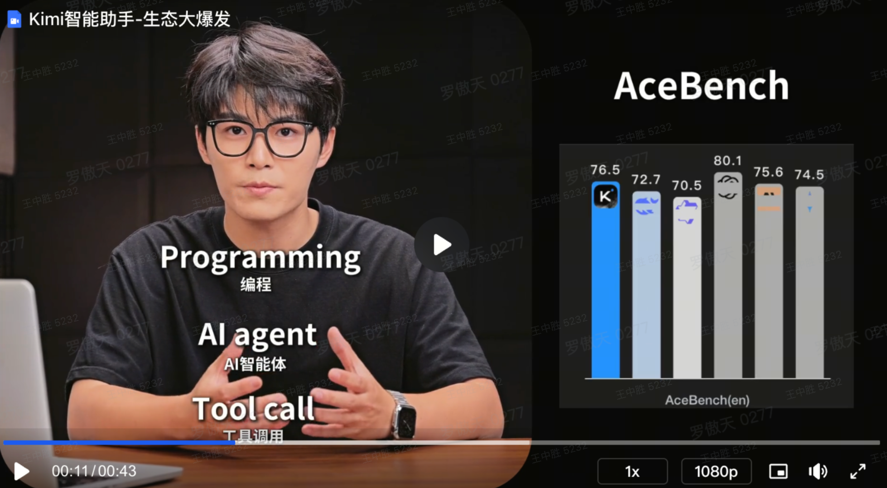
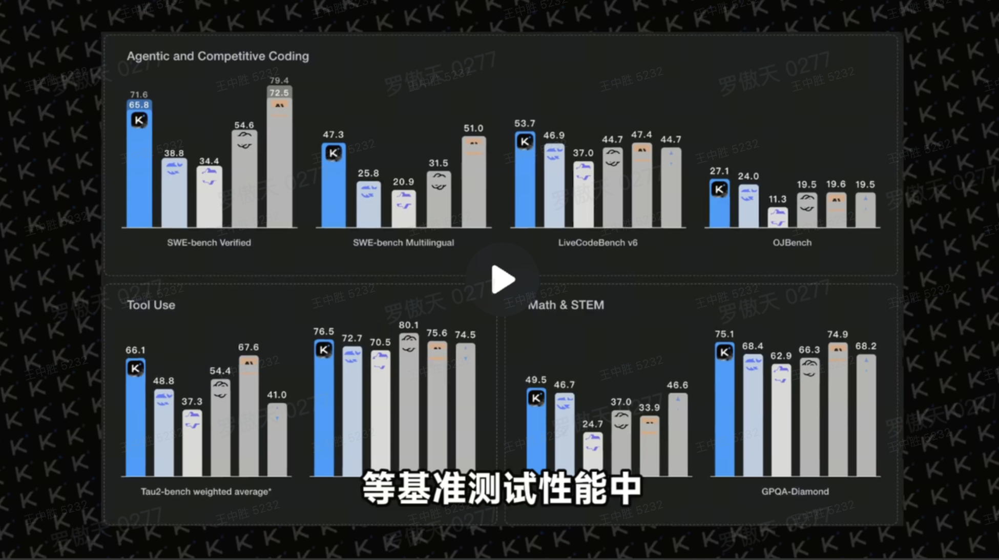
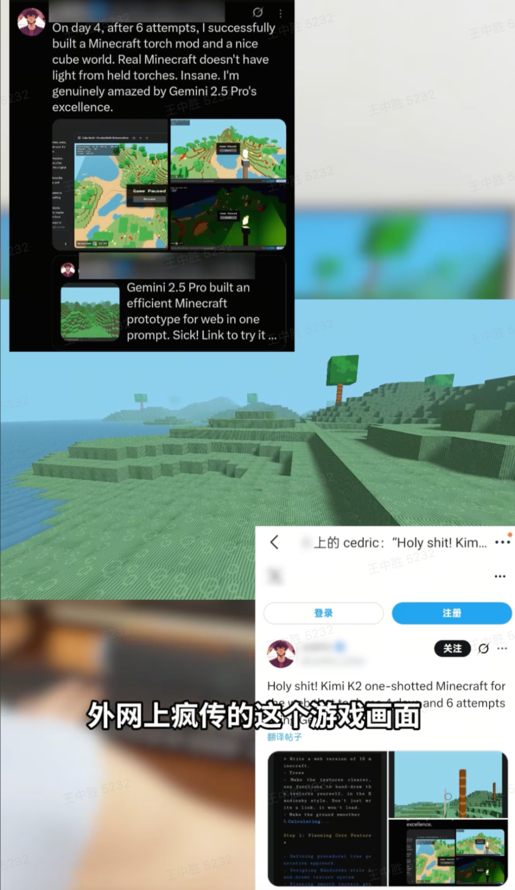

王中胜
Kimi增长创意实习 Review
一条打怪升级的创意探索之路
个人定位
技术热情与创意工作相结合
代码素材Owner
技术 x 内容，深度挖掘代码场景价值，将硬核的专业功能转化为兼具表现力与转化效果的视觉内容，为增长提供素材弹药。
自动化提效
主动识别并拆解工作流中的重复性痛点，通过设计与开发自动化工具/可复用方法，将标准化流程赋能团队，提升整体协作效率。
原生-去营销化
为了提升投放素材的整体质量与用户观感，通过优化脚本话术、把控视觉品质，来对内容品质与专业度进行优化，优化ai脚本，搭建创意专项知识库。
成长路径
「北京泓文国际-视频剪辑」 2022.10 - 2023.04
兴趣使然的创作
收获： 积累对视频脚本策划、剪辑、节奏等方面的全流程经验。
「36氪-新媒体运营」 2023.06 - 2023.11
斜杠内容的尝试
收获： 提升对热点的敏感度，要用数据来回答内容问题，通过数据指导内容策略。
「脉脉-内容运营」 2024.02 - 2024.05
用户思维的培养
收获： 分析用户行为与反馈信息，提炼用户的核心需求。
「在校期间」
学术技能的储备
收获： 锻炼学术思维，进行科学的研究设计，积累编程基础，利用代码来辅助提效。
Level 1: AI自动化赋能
AI赋能，效率革新
AI自动审核
面对海量素材审核的挑战，我独立设计并上线了AI自动审核工具，将重复流程标准化、自动化。
0
审核效率提升 %
(5分钟/条 → 1分钟/条)
相当于每天为团队节省数小时重复劳动
0
已处理风险点 +
(自6月上线以来)
有效保障合规性，大幅降低拒审风险
多源
整合拒审知识库
(覆盖多平台与广告法)
智能比对并高亮标注违禁词
重构用户Query标签体系
为了更精准地洞察用户需求，我建立了“用户需求-领域-二级领域”的多维标签体系，为创意和投放提供科学依据。
一级标签：用户需求 (12)
二级与三级标签：领域与子领域 (19 / 80)
← 在左侧选择一个领域
脚本自动化 2.0
graph TD;
A["制作素材"] --> B("用户体验优化");
B --> C{{"提高专业度、信任度
降低营销感"}};
C --> D("核心难点");
D --> E["1、内容要求更高
更关注同行背书、技术参数等"];
D --> F["2、制作门槛高
缺乏对真实痛点、专业术语的理解"];
D --> G["3、制作效率低、质量不稳定
大多依赖个人和临时调研"];
subgraph 难点攻克
E --> H("搭建素材库");
F --> H;
G --> H;
end
subgraph 素材库构成
direction LR
H --- I["参考来源: 头部达人/社媒内容"];
H --- J["实际痛点与使用场景"];
H --- K["专业话术整理"];
H --- L["专业领域附件: 代码文件/学习资料/公司财报/数据等"];
end
H -- "风格式范本+内容输入" --> M["AI脚本"];
H -- "内容框架、拍摄风格、职业形象" --> N["供应商"];
M --> O{{"专业内容素材"}};
N --> O;
style E fill:#4A3A0A,stroke:#FFD700,stroke-width:1px,color:#FFD700
style F fill:#4A3A0A,stroke:#FFD700,stroke-width:1px,color:#FFD700
style G fill:#4A3A0A,stroke:#FFD700,stroke-width:1px,color:#FFD700
style H fill:#1E40AF,stroke:#60A5FA,stroke-width:2px,color:#EFF6FF
style O fill:#166534,stroke:#4ADE80,stroke-width:2px,color:#EFF6FF
style I fill:transparent,stroke:transparent,color:#9ca3af
style J fill:transparent,stroke:transparent,color:#9ca3af
style K fill:transparent,stroke:transparent,color:#9ca3af
style L fill:transparent,stroke:transparent,color:#9ca3af
a. 效果广告AI脚本优化
| 优化维度 | 内容植入前 | 优化后 |
|---|---|---|
| 角色人设 | 刻意塑造人设：我是一个10年的资深程序员, 用Kimi帮我直接解决了...... (用户OS: 你自己说是，你就是吗?) (Kimi吐槽：资历金光闪闪，结果混到来信息流里喊我扫码？) |
用话术 & 使用场景来引出角色：
|
| 产品定位 | 夸大功能：无所不能的超级神器、国产之光 (用户OS: 说的天花乱坠，每天都在“变天了”，已经听腻了) (Kimi吐槽：只要带“国产之光”四个大字，我就默认先打三折——毕竟上一束光刚闪瞎我钱包，现在还在分期还款。) |
辅助提效：你的工作搭子，能够帮你.... 关注使用价值 |
| 使用方式 | 简单使用：Kimi，帮我Debug / Kimi,帮我写个抢票软件 (用户OS：我不想看变魔术，想看如何一步步解决真实问题) (Kimi吐槽：抢票更离谱，它给我生成12306官网链接，附赠一句“祝您抢票顺利”。谢谢，我自己会百度。) |
符合职业习惯：
|
| 夸赞视角 | 强调大家都在用：人人都在用的Kimi/ 清华学霸都在用的Kimi/大学生学习神器/ (用户OS：话术已免疫，自卖自夸，不如多讲讲产品本身) (Kimi吐槽：人人年薪百万、人人都在用、人人焦虑得睡不着，结果一查“人人”原来就那俩营销号。) |
用权威的榜单，行业技术大牛来背书： 体现各个行业bench排行榜，海外用户的case



|
| 行动号召 | 紧急直接：你秒变行业专家，快点击下方链接，免费体验! (用户OS：点一下就变专家，专家也太不值钱了) (Kimi吐槽：听着比“三天速成诺贝尔奖”还离谱，把“专家”这俩字儿从手术台直接拖进菜市场，一刀切成白菜价。) |
类博主互动：看看大家怎么说、这些只是我探索的一部分，有更多好的使用方法可以评论告诉我 价值观认同：它开始把老师从那些最耗费心神的案头工作中释放出来，去真正地、用心地、面对面地，回应每一个孩子发出的信号。 |
b.脚本去营销化
痛点
专业演员营销感重，内容原生感不足；素人博主缺乏文案功底，合作周期长达1-2个月。
解决方案
筛选合适的素人博主，并为其提供由AI生成的定制化脚本，将合作周期压缩到1-2周。
核心方法
不依赖固定模版，关注达人风格化的叙事框架、语言风格等，生成动态创作原则并输出脚本。
专业博主+结构化教学
点击查看详情
当代策略人的崩溃，我懂。所以我整合了一期详细的Kimi使用指南，就是为了让每个人，从“手动挡”一键切换到“自动挡”。
第一部分：Kimi当助理，解决80%的繁杂分析。
第一，市场爆点分析。像这样直接输入公式：【2025年 女性护肤品 传播爆点】。过去要花几天搜集的资料，Kimi三分钟就能完成。厉害的是，它不只给出爆点，还会深入分析背后的社会心理和文化动因，等于直接给了一份洞察报告。
第二，营销方案起草。用这个公式：【用‘黄金公式’拆解XX品牌 输出策划方案】。Kimi能快速生成一份逻辑全面的方案初稿。不止于此，它还是你的“策略风险扫描仪”。你把自己的方案喂给它，它能用同样的框架，以表格形式清晰指出方案的逻辑漏洞和优化建议。
解决了繁杂工作，我们再谈如何成为高阶玩家。
第二部分：吸收Kimi的策略智慧，成为超强个体。
首先，构建你的专属分析模型。 通过和Kimi的多轮对话追问，引导它一步步解构复杂的商业题， 最终生成一个包含市场机会、用户画像、产品定位等维度的、你专属的分析模型。
其次，快速学习一个新赛道。把几十份行业研报、财报一次性投给Kimi，让它【生成行业商业模式图谱并分析核心竞争要素】。几周的学习周期，现在一天就能搞定。
掌握这些技巧，你就能在AI时代，从繁杂的细节中解放出来，变身“超强策略个体”。
小红书博主+反思成长故事
点击查看详情
刚入行时，我在一家大广告公司做策略助理。说白了，就是把几十页的报告，搬运到PPT里。开会可以不发言，但老板要的50页PPT，你今晚必须做完。
我当时并不是在靠策略能力赚钱，我是在靠我的耐心和视力。
直到有一次为了比稿，我整合十几份报告到凌晨三点，满脑子都是复制粘贴，我突然就崩溃了。我瘫在椅子上问自己：我读了那么多书，做了那么多案例，我为什么要靠“策略体力活”来赚钱？
那一刻我才意识到，我真正的价值，是我的思考，而不是我的“擅长熬夜”。
后来，我发现了一种全新的工作方式。
比如，分析“2025年女性护肤品爆点”这种事，不再需要我花几天去搜集资料。我直接把问题扔给Kimi，它几分钟就能给我一份洞察报告，还分析了背后的社会心理。
再比如，用【黄金公式】做方案，我不再需要自己去填充里面的每一个格子。我让Kimi帮我拆解，我只负责在它的答案之上，进行更高维度的决策。
我的工作重心，彻底从“寻找答案”，转移到了“提出一个好问题”上。
所以，希望所有同行都能认识到，无休止地堆砌资料、通宵做PPT，这些都不是你的分内工作。你的优秀，不代表你应该被物化成一个信息处理器。
你的才华，是用来创造和判断的，不是用来消耗在复制粘贴里的。
Final Level: 未来展望
持续进化，创造价值
基于本次实习的积累，我将继续在以下三个方向深耕，为团队创造更大价值。
探索AI自动化赋能
识别业务当前工作流中能被AI大模型替代的人工环节,协助团队开发和优化自动化工具,提高整体工作效率。
专业品质素材产出
提高素材产出品质与内容质量,提升用户专业浓度和转化效率。深挖“产品-场景”价值,将功能介绍转化为场景化价值展示。
海外素材支持
利用新版标签体系梳理用户行为与需求,结合海外调研内容,为不同市场和文化环境提供更丰富的脚本创意支持。